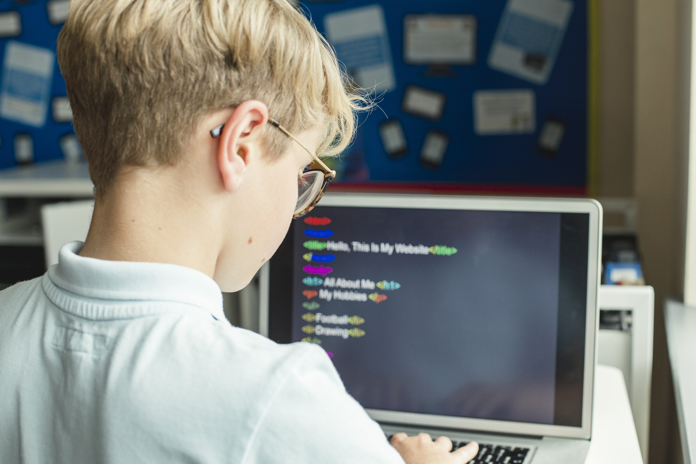

This is a website that will cover the IT specification for Years 7, 8 and 9. This website contains a brief overview of all parts of the IT curriculum for the years 7, 8 and 9. You can navigate this website throught the navigation bar at the top and you can return to this homepage through the logo in the top left.
This website should help provide resources and links that can be useful for all those doing the IT course.